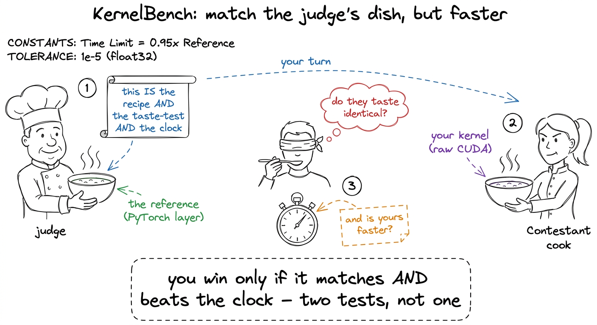
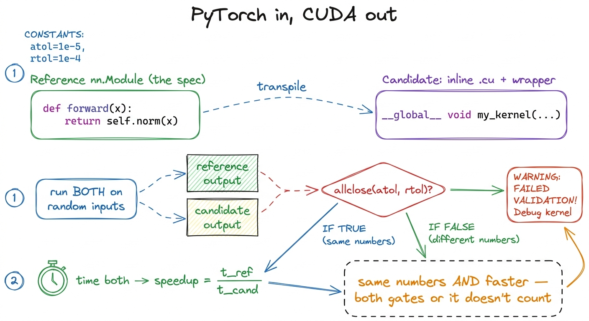
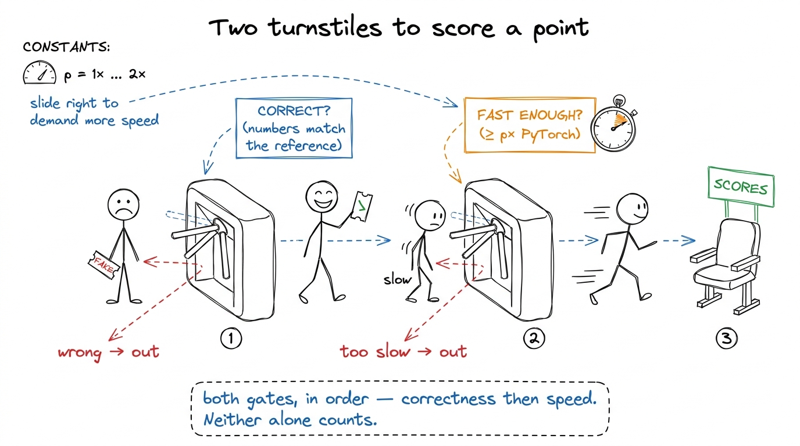
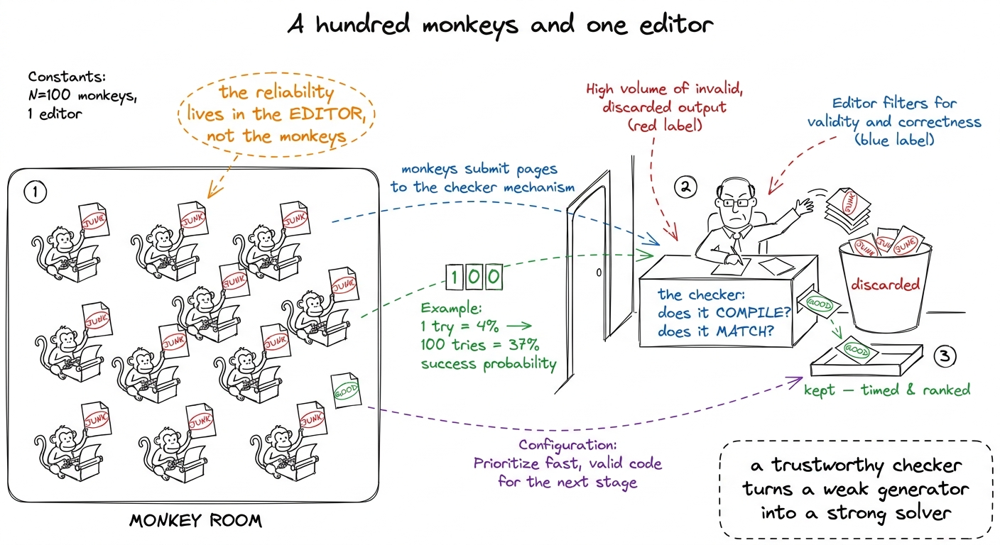
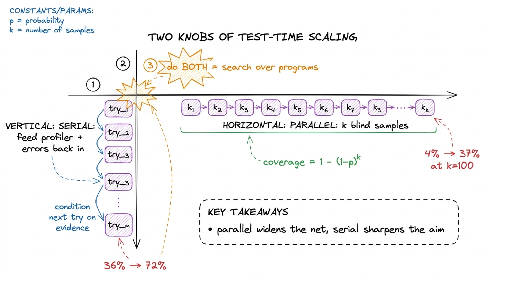
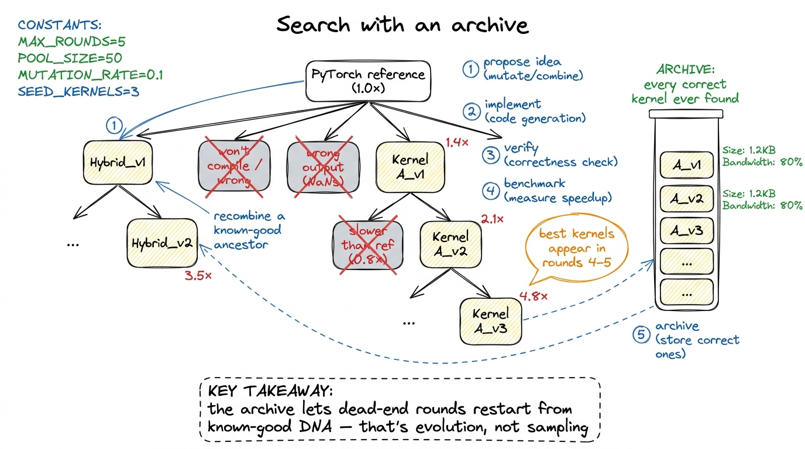
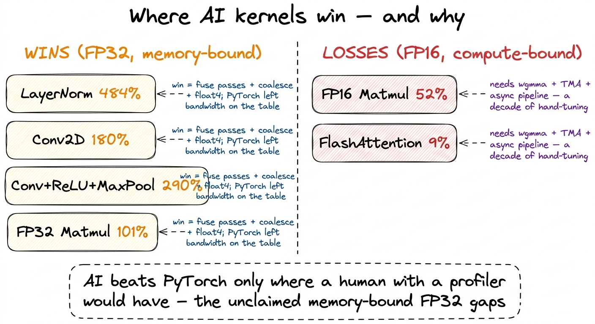

Teaching AI that writes kernels
By the end of this chapter you can stand at a whiteboard and teach a student — honestly, without hype and without doom — what happens when you point a language model at kernel writing: how we score it fairly, why drawing a hundred samples beats drawing one, exactly where the AI wins and where it falls flat on its face, and why the human with a profiler still has a job. This is the chapter that ties the whole workshop together, because everything the students learned to do by hand is about to be handed to a machine — and the machine turns out to be a search, not a genius.
Let's build it slowly. No hype. The honesty is the point.
The question, in plain words
For four weeks your students have been the search algorithm. They looked at a slow kernel, had an idea, wrote it, timed it, read the profiler, kept the good version, tried again. That loop is the job. It is also slow and tiring.
So the natural question is: can we drop a language model — the same kind of model behind ChatGPT — into that loop instead of a human? Give it a PyTorch layer, ask it for fast CUDA, and let it grind?
The answer is a careful, honest yes and no. And teaching the exact shape of that "yes and no" is the most valuable thing you can give a student, because it inoculates them against both the hype ("AI writes all our kernels now, why are we here") and the despair ("then my skills are worthless"). Neither is true. Let's earn the real answer.
First you need a fair judge: KernelBench
You cannot ask "can AI write good kernels" until you can grade a kernel fairly. So the first thing to teach is the benchmark. It is called KernelBench, and its design is beautiful in how simple it is.
Each problem hands the model a small PyTorch layer — a nn.Module, the reference. The model's job: give back a module that does the exact same thing, but with the forward pass written as raw CUDA. Same inputs in, same numbers out, but faster.
That triple role is the clever part. Using PyTorch as the spec quietly solves three headaches at once. There is no ambiguity — the layer says precisely what to compute, no English left to misread. There is a free correctness check — run both modules on random numbers and compare the outputs. And there is a real baseline to beat — PyTorch is not a strawman; it dispatches to genuinely well-tuned libraries. Beating it is honest work.

figure rendering · KernelBench as a cooking contest: the reference dish is simultaneously
figure rendering · The technical translation of the contest: the PyTorch module is the spThree levels, three kinds of hard
Teach students that KernelBench has three tiers, and they are not simply small-medium-large. Each one tests a different skill.
- Level 1 — one operator. A single matmul, a convolution, a softmax. Here the model goes head-to-head with a library kernel NVIDIA already tuned to death. Almost nowhere to hide.
- Level 2 — a short sequence.
conv → bias → scale → ReLU. The win here is fusion: glue the steps into one kernel so the in-between results never leave the chip. This is the memory-movement lever, exactly what the students learned earlier in the course. - Level 3 — a whole block. A full attention layer, a Vision Transformer block. Dozens of ops, many bottlenecks at once. The model has to find where the time goes, not just pattern-match one kernel.
The fair score: fast_p (two gates, not one)
Now the metric, and this is where you make students respect the benchmark. Most coding benchmarks score one thing: did the code pass the tests? But a kernel has two things that both must be true. A correct-but-slow kernel is useless. A blazing-fast-but-wrong kernel is worse than useless — it silently corrupts your model.
So KernelBench uses fast_p: the fraction of problems where the kernel is both correct and at least p times faster than PyTorch.
The p is a dial you slide, and sliding it is the whole trick:
- fast_1 — the headline — means correct and faster than PyTorch at all (speedup > 1×). "Did you actually beat it?"
- fast_2 means correct and more than twice as fast. Now you're asking for a real win, not a coin-flip margin.

figure rendering · fast_p drawn as two turnstiles: a kernel must clear correctness first,The honest number: under 20%
Now deliver the number that started this whole line of work, and deliver it flat, without drama.
Point frontier language models at KernelBench. Ask for one kernel per problem. Score fast_1. Across all three levels, the models produced kernels that were correct and faster than PyTorch less than 20% of the time. Four out of five single attempts either failed to compile, produced wrong numbers, or produced right numbers that were slower than the framework they were trying to beat.
float4 loads and __syncthreads() and boundary guards, one typo kills it. Then it has to be numerically correct — every index, every reduction, every edge case right. Then it has to be faster than a library NVIDIA hand-tuned for fifteen years. Getting all three, first try, in one shot? Of course it's usually no. The surprise isn't that it fails 80% of the time. The surprise is coming next."Teach the failure profile, because it's the most useful part. The models do relatively well on Level 2 fusion — because that win is "delete a trip to memory," which is learnable from text. They do relatively badly wherever the win requires driving the tensor cores through hardware-specific machinery. Hold that thought; it's the spine of the whole chapter.
The surprise: monkeys with a checker
Here is the reframe that changed the field. Stop asking the model to be smart. Ask it to be plural.
Take DeepSeek-V3, a model with no special kernel training. Ask for a Level 2 kernel once — it succeeds about 4% of the time. Dismal. Now draw 100 independent samples for the same problem, compile and check every one, and keep the best. The success rate jumps from 4% to 37%.
Same model. Same prompt. No feedback, no cleverness. Just a hundred rolls of the dice against a checker that cannot be fooled about whether code compiles and can barely be fooled about whether it's correct.

figure rendering · The monkeys metaphor: a hundred cheap, unreliable samples become reliaWhy this works — one tiny piece of math
Students will suspect a trick. Show them there isn't one, with a single formula they can do on the board.
If one sample solves a problem with probability p, then the chance that at least one of k samples solves it is 1 − (1−p)^k. That's it. Plug in a miserable p = 0.04 and k = 100:
1 − (1 − 0.04)^100 = 1 − 0.96^100 ≈ 1 − 0.017 ≈ 0.981 − 0.017 ≈ 0.98. The math says a 4%-per-try generator should clear nearly every problem within 100 tries. So why did the real number land at 37%, not 98%? Because for some problems the model's true p is exactly zero — it simply cannot express the idea the kernel needs, and no amount of resampling conjures an idea that isn't there. Sampling buys coverage over ideas the model can reach. It buys nothing over the ones it can't. That gap between 98% and 37% is the honest map of what the model doesn't know.Serial feedback: give the profiler to the model
Parallel sampling is a hundred blind guesses — they never learn from each other. The second knob is serial: run one kernel, feed its compiler errors and its profiler output back into the next prompt, and let the model react to evidence like a human worklog does.
When the Stanford group did this with a reasoning model (DeepSeek-R1) on Level 2, the score climbed from a single-shot 36% to about 72% — a clean doubling.

figure rendering · The two knobs of test-time scaling: parallel sampling raises coverage,It's not a chatbot — it's evolution
Put the two knobs together and something clicks: this is a search over programs, and the whole vocabulary of search opens up.
The single most productive idea, from Ouyang and collaborators at Stanford CRFM, is to split the move in two. First have the model propose an optimization idea in plain English — "stage the B tile in shared memory," "fuse the ReLU into the epilogue so we never round-trip through memory," "turn the convolution into an implicit matmul." Then have it write the code for that idea.
Then the search structure: each idea fans out into several implementations, all compiled, checked, and timed in parallel. The fastest survivors seed the next round, alongside an archive of every correct kernel ever found. Bad branches die; good branches breed and recombine. This is evolutionary search where the mutation operator is "a language model with a hypothesis" instead of a random bit-flip.

figure rendering · Evolutionary kernel search: an archive of verified kernels lets the loThe honest scorecard: where it wins, where it faceplants
Now the payoff, and the most important slide you'll ever show on this topic. When CRFM ran this loop on real operators, some results were genuinely stunning — and some were humbling. Show both, side by side, always.
The wins (throughput as a percentage of PyTorch; over 100% means faster):
- LayerNorm — 484%, nearly 5× faster.
- Conv2D — 180%, 1.8× faster.
- Fused Conv2D + ReLU + MaxPool — 290%, and still 189% even against
torch.compile. - FP32 Matmul — 101%, essentially matching a
cuBLAS-backed baseline.
The losses:
- FP16 Matmul — 52%, roughly half speed.
- FP16 FlashAttention — 9%, more than 10× slower.
float4. PyTorch just left bandwidth on the table for that shape, and the search found it. It is the memory-bound playbook your students learned — executed by a machine that could try a hundred variants overnight. No magic. Just the regime, run at scale.Now the losses, which are the real lesson. Why does the exact same loop hit 9% on FlashAttention? Because FP16 matmul and attention on modern GPUs need the tensor cores, and feeding the tensor cores means orchestrating wgmma warpgroup instructions, TMA async copies, shared-memory staging, and a double-buffered software pipeline that hides every latency behind the next stage. That machinery is a decade of hand-tuned, hardware-specific engineering. A model that has seen almost no correct examples of it in its training data cannot rediscover it in five rounds. It emits a flat, un-pipelined kernel that never even reaches the tensor cores — and stalls.
wgmma pipeline a compute-bound FP16 kernel demands — because that gap was already closed by people who spent years on it. The AI didn't make the kernel engineer obsolete. It made the hard kernels the only ones worth a human's afternoon.
figure rendering · The whole result on one card: the wins are the unclaimed memory-boundThe tie to harnesses — why this is the finale
Here is why this chapter closes the workshop. Look back at that search loop. propose_ideas is the hypothesis. write_code plus the two gates is implement and verify. benchmark and profile are read the bottleneck. The archive is the log of everything that worked. That is exactly the predict-then-measure discipline the students practiced by hand — the machine just runs it wider and never gets tired.
You can now teach
- KernelBench as a cooking contest: the PyTorch layer is the spec, the correctness check, and the baseline all at once — and Level 1 is the hardest to beat, not the easiest.
- fast_p as two turnstiles: correctness then speed, two orthogonal gates that make the benchmark impossible to game — and why "under 20% on fast_1" is an honest number, not a gloomy one.
- The monkeys result: 100 samples with a checker take DeepSeek-V3 from 4% to 37%, with the one-line proof
1 − (1−p)^k— and why the trust lives in the checker, not the model. - Serial feedback: handing the model the profiler doubles the score (36% → 72%), because it's the same three-regimes diagnostic a human reads.
- Evolutionary search with an archive: propose ideas in English, branch wide, seed the best, recombine — and why the winners show up in rounds 4–5.
- The honest scorecard: 484% on LayerNorm (memory-bound, no magic) vs 9% on FlashAttention (the
wgmma/TMApipeline the search can't rediscover) — the AI wins exactly where a human with a profiler would have. - The tie to harnesses: the search loop is the predict-then-measure discipline, and the human's real product is now the harness — the trustworthy editor around a cheap generator.